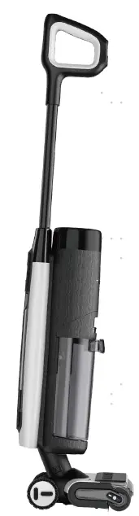
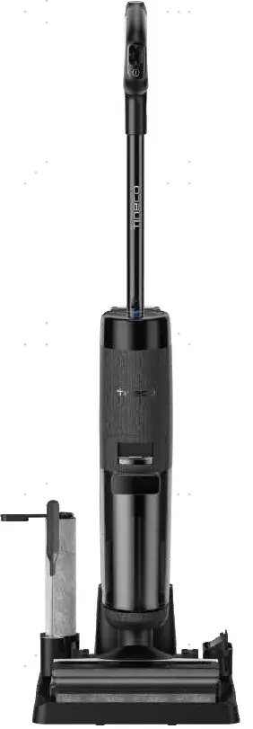
1. Tear down handle& Accessory 13
2. Tear down Display Screen 13
4. Tear down Battery/Main Motor（CL2123） 15
5. Tear down Battery/Main Motor（CL2335） 16
7. Tear down Assy Main Body 19
History
| No | Date | Comments | Version | ISSUE | Approve |
|---|---|---|---|---|---|
| 1 | 24.07.30 | First Draft | 1.0 | Qiu | |
Tools
Electric screwdriver\Long-nose pliers\Slotted screwdriver\Zip tie\Scissors
Repair notice
Important Safety Instructions:
1. Wear gloves when carrying out any repair work.
2. Ensure that there are no exposed electrical wires in the maintenance environment and strictly prohibit direct testing of the equipment with AC power to prevent electric shock.
3. When repairing electrical components, please disconnect the battery pack first.
Preparation:
Empty the clean water tank and dirty water tank before disassembly.
Replacement requirements:
1. All parts that have passed the cross-check must be removed from the faulty machine, fitted with the user's original adapter and then subjected to the next replacement test.
2. After repair, organise the removed old parts and unused parts.
Range of Product
| No | Product Name | Factory Serial Model | SKU | Remark |
|---|---|---|---|---|
| Floor One S7 Pro | CL2123B-01 | FW200300US | CL2123 | |
| Floor One S7 Pro | CL2123D-01 | FW200700EU | ||
| Floor One S7 Pro | CL2123D-02 | FW200800ID | ||
| Floor One S7 Pro | CL2123D-03 | FW200900TH | ||
| Floor One S7 Pro | CL2123K-01 | FW201100MY | ||
| Floor One S7 Premium | CL2123D-04 | FW201200EU | ||
| Floor One S7 Pro | CL2123L-01 | FW201400AU | ||
| Floor One S7 Pro | CL2123K-02 | FW201500IL | ||
| Floor One S7 Pro | CL2123P-01 | FW201700JP | ||
| FLOOR ONE S7 PRO | CL2123Q-01 | FW202500RU | ||
| Floor One S7 Pro | CL2335D-01 | FW221100US | CL2335 | |
| Floor One S7 Pro | CL2335E-01 | FW221300DE | ||
| Floor One S7 Pro | CL2335J-01 | FW222200UK |
Range of Spare Part
Note：CL2335 and CL2123 are both S7 Pro series，but they have different spare part，please check SKU spare part list when in repair process.
| No | Spare Part Name | Remark |
|---|---|---|
| Plastic part | Assy body rear 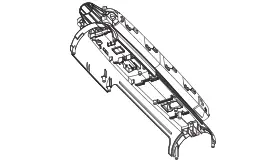 | |
| Plastic part | Body DECO cover bottom 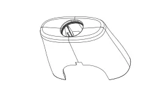 | |
| Plastic part | rotary union 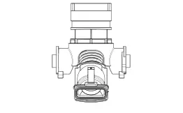 | |
| plastic part | DWT cover 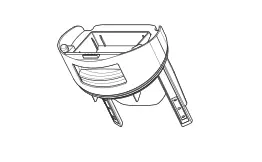 | |
| Sensor | Sewage sensor 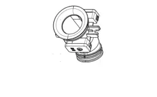 | |
| Sensor | Water level sensor 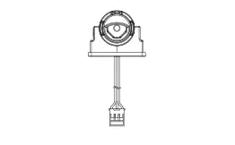 | |
| Motor | Main motor 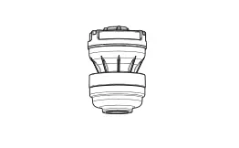 | |
| Motor | Brush roller motor 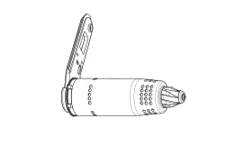 | |
| PCBA | Brush PCBA 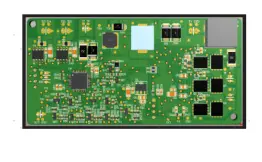 | |
| PCBA | Main PCBA 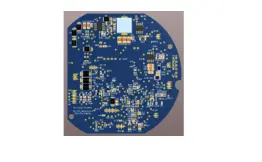 | |
| PCBA | LED LAMP PCBA 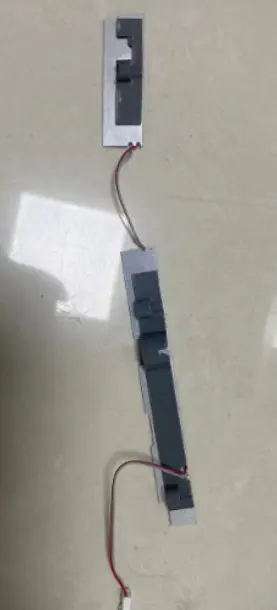 | |
| Scraper | Scraper 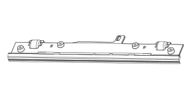 | |
| Scraper | Scraper water board 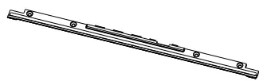 | |
| Charging Base | 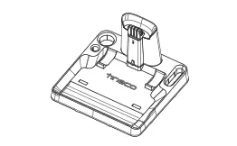 | |
| Filter | 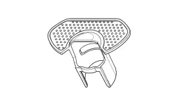 | |
| Display Screen | 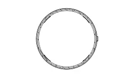 | |
| Brush Roller | 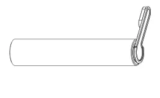 | |
| Adapter | 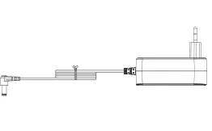 | |
| Clean Water Tank | 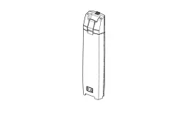 | |
| Dirt Water Tank | 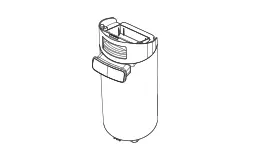 | |
| Battery | 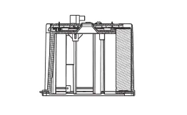 | |
| Wire | 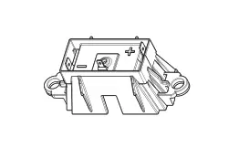 | |
| Repair Charging Chip | 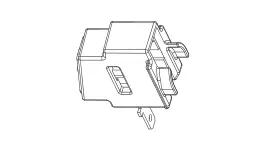 | |
| Handle | ||
| Brush Roller Cover | 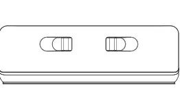 | |
| Pump | 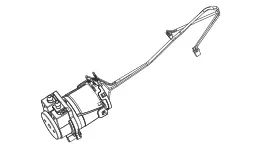 | |
| Repair Wheel | Assist Repair Wheel 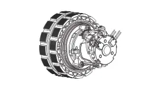 | |
| Swich | 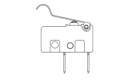 |
Wiring diagram
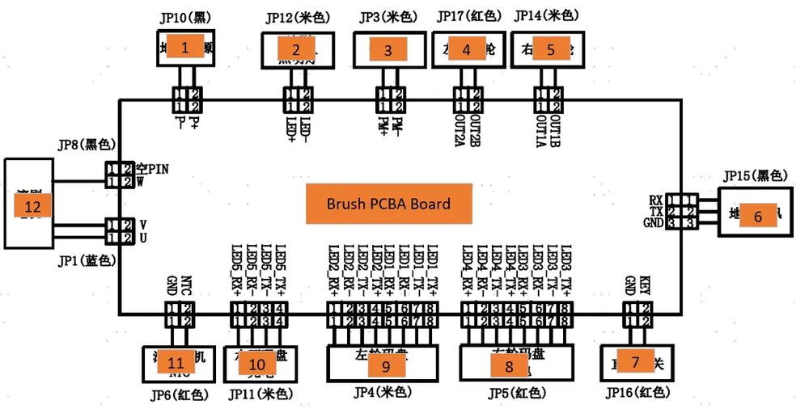
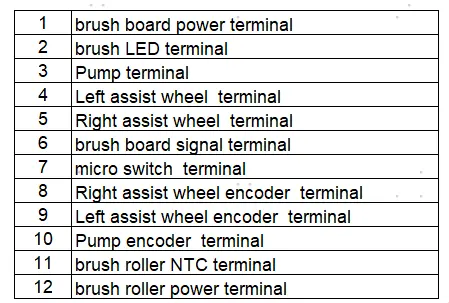
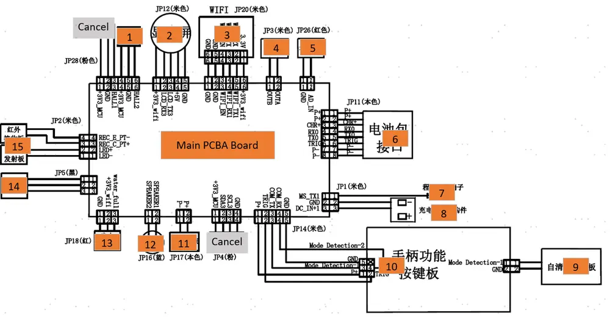
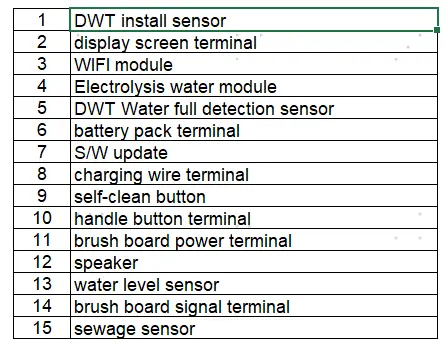
Tear down Guide
Tear down handle& Accessory
Pull the handle up after holding according to photos as below

Disassembly all accessories
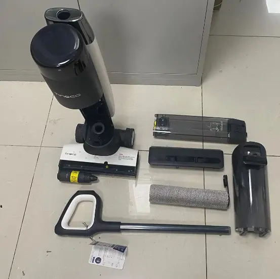
Tear down Display Screen
Remove screw and disassemble Body Rear Cover
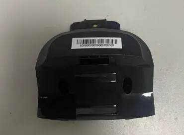
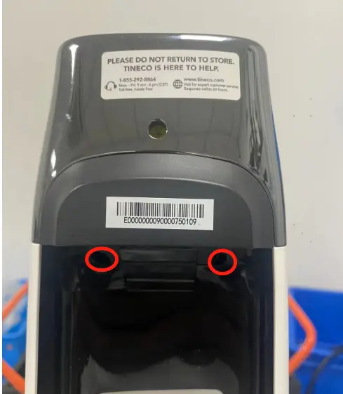
Remove screw and disassemble Body DECO Cover Top
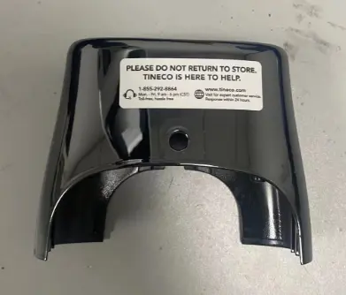
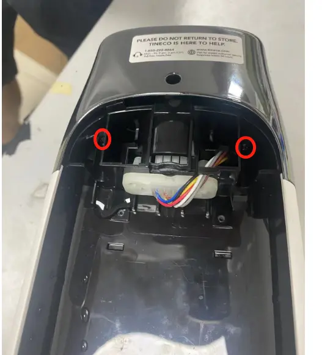
Clockwise rotation to teardown display screen
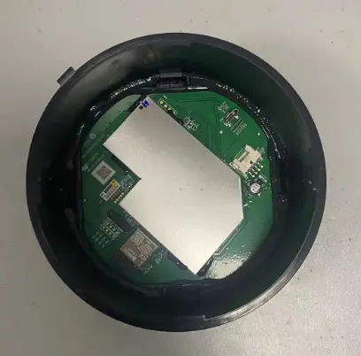
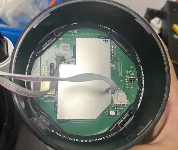
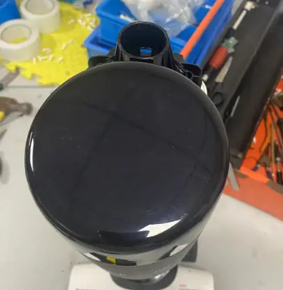
Tear down Main PCBA
Refer to the screen tearing down steps (2.0） to disassemble the screen
Unscrew two screws and unplug the terminal to disassemble the Main PCBA
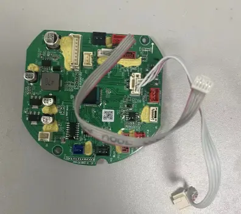
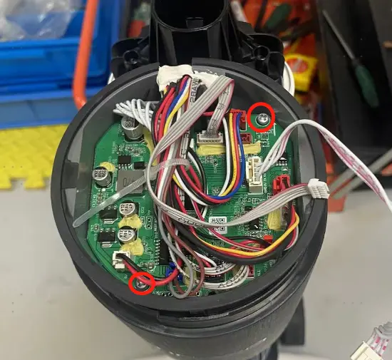
Tear down Battery/Main Motor（CL2123）
Refer to the steps 2.0~3.0 to disassemble the Screen & PCBA
Remove 4 screws to disassemble the Body Front cover
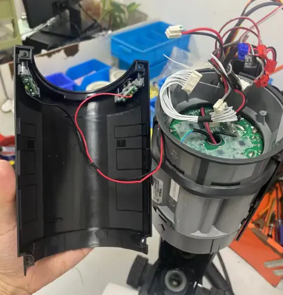
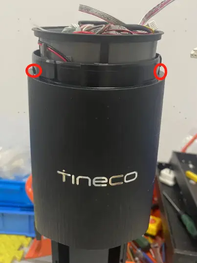
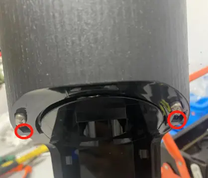
Unscrews 2pcs screws to disassemble this part
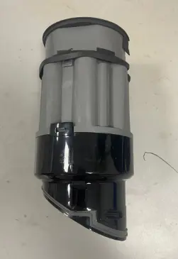
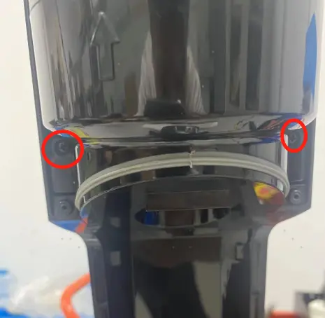
Unplug terminal and disassemble the hook to disassemble the Main motor and Battery
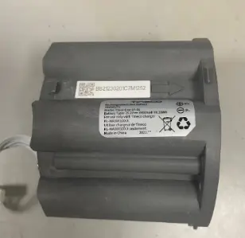
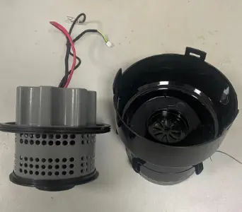
Tear down Battery/Main Motor（CL2335）
Refer to the steps 2.0~3.0 to disassemble the Screen & PCBA
Remove 4 screws to disassemble the Body Front cover
Remove 4 screws to disassemble the Main motor and Battery
Tear down Assy brush part(Scraper/LED LAMP PCBA/Brush PCBA/ Brush Roller Motor/ Micro swtich/ Pump/assit repair wheel)Refer to the steps 2.0~4.0to disassemble the Screen & PCBA
Unscrew screws to remove Scraper
Unscrew screws and disassemble Assy Brush Cover
Unscrew screws and disassemble LED LAMP PCBA
Unscrew screws and unplug terminals to disassemble Brush PCBA
Unscrew screws to disassemble Brush Roller Motor
Unscrew screws to disassemble Micro swtich

Unscrew screws and unplug water pipe to disassemble the Pump

Unscrew screws to disassemble the Swivel connctor cover R/L
Unscrew screws to disassemble the Assist Repair Wheel
Unscrew screws to disassemble the Assy brush part
Tear down Assy Main Body
Refer to the steps 2.0~5.0to disassemble the Screen\PCBA\Battery\Main Motor/Assybrush part
Unscrew bottom screws and disassembly Body DECO cover bottom
Unscrew screws to disassemble Rotary union
Unscrew screws to disassemble Body Front and Body Rear
Unscrew screws to disassemble Sewage sensor
Unscrew screws to disassemble Wire
Unscrew screws to disassemble Water level sensor
Unscrew screws to disassemble Electrolytic water wire
Repair Guide
| Failure System | Failure Phenomenon | No | Failure Mode | Repair Solution | Spare Parts |
|---|---|---|---|---|---|
| Water circulation system Failure | No/less spray water | CWT Failure | replace CWT | CWT | |
| spray hole blocked | clean spray hole | maintenance | |||
| Brush roller cover blocked | Clean or replace | Brush roller cover | |||
| CWT seal ring rubber Failure | replace CWT seal ring | CWT seal ring | |||
| pump Failure | replace pump | pump | |||
| main pcba Failure | replace main pcba | main pcba | |||
| pipe blocked | replace water pipe | water pipe | |||
| pipe bent or broken | fix or replace pipe | water pipe | |||
| water level sensor blocked | replace water level sensor | water level sensor | |||
| leaking water | Debris channel /Air duct blocked | 1.Clean the debris channel blockage、debris wrapped around the brush roller 、suction nozzle blockage; 2.Dry and clean HEPA; 3.Empty and clean the DWT | maintenance | ||
| CWT leaking water | replace CWT | CWT | |||
| pump Failure | replace pump | pump | |||
| water level sensor broken | replace water level sensor | water level sensor | |||
| water pipe loose | Re-plug water pipe | water pipe | |||
| Sewage recovery pipe damaged | replace sewage recovery pipe | Rotary union | |||
| DWT broken | replace DWT | DWT | |||
| brush cover damaged | replace brush cover | brush roller cover | |||
| HEPA damaged | replace HEPA | HEPA | |||
| water pipe damage | replace water pipe | water pipe | |||
| no suck up water | Debris channel /Air duct blocked | 1.Clean the debris channel blockage、debris wrapped around the brush roller 、suction nozzle blockage; 2.Dry and clean HEPA; 3.Empty and clean the DWT | maintenance | ||
| HEPA not install properly | reinstall HEPA properly | maintenance | |||
| brush roller damage | replace brush roller | brush roller | |||
| Sewage recovery pipe damaged | replace sewage recovery pipe | Rotary union | |||
| Scraper damage | Replace scraper | Scraper | |||
| motor Failure | replace main motor | main motor | |||
| brush motor Failure | replace brush roller motor | brush roller motor | |||
| charging system Failure | No response when charging | adapter Failure | replace adapter | adapter | |
| charging base wire Failure | replace charging base | charging base or Repair Charging Chip | |||
| charging base poor contact | replace charging base | charging base | |||
| main body wire damage | replace body wire | wire | |||
| battery pack Failure | replace battery pack | battery pack | |||
| Main PCBA Failure | replace main PCBA | main PCBA | |||
| display screen Failure | replace display screen | display screen | |||
| Battery level indicator flashes several times and then goes off, then the machine stop charging | battery pack Failure | replace battery pack | battery pack | ||
| adapter Failure | replace adapter | adapter | |||
| battery level under 100% and the indicator unable To Increase | battery pack Failure | replace battery pack | battery pack | ||
| adapter Failure | replace adapter | adapter | |||
| battery level drop when in charging | battery pack Failure | replace battery pack | battery pack | ||
| adapter Failure | replace adapter | adapter | |||
| charging system Failure | Poor charging contact（shake to charge） | Charging Pin rusted | Replace the repair charging chip | repair charging chip | |
| Poor contact of the charging contact pin | Replace the repair charging chip | repair charging chip | |||
| repair charging cosmetic damage | Replace the repair charging chip | repair charging chip | |||
| charging base cosmetic damage | replace charging base | charging base | |||
| wire cosmetic damage | replace wire | Wire | |||
| Rotary union worn or cosmetic damage | replace Rotary union | Rotary union | |||
| abnormal noise when in charging | adapter Failure | replace adapter | adapter | ||
| Main PCBA Failure | replace main PCBA | main PCBA | |||
| battery pack Failure | replace battery pack | battery pack | |||
| burn smell in main body when in charging | Main PCBA Failure | replace main PCBA | main PCBA | ||
| battery pack Failure | replace battery pack | battery pack | |||
| Burning smell when in charging | battery pack Failure | replace battery pack | battery pack | ||
| adapter Failure | replace adapter | adapter | |||
Turn on Failure
| turn on but no reaction , screen not light up, also no reaction when charging | handle Failure | replace handle | handle | |
| battery pack Failure | replace battery pack | battery pack | |||
| Main PCBA Failure | replace main PCBA | main PCBA | |||
| After pressing the power button, the display lights up, but it doesn't work after releasing the micro switch. | Micro switch Failure | replace Micro switch Failure | Micro switch | ||
| Motor Failure | replace motor | motor | |||
| Main PCBA Failure | replace main PCBA | main PCBA | |||
| stop running after several times max bar blinking | motor Failure | replace motor | motor | ||
| stop running after several times and DWT indicator alarm | DWT full | Empty/clean the DWT | maintenance | ||
| DWT pin rusted | Rinse and clean the DWT top cover, bottom cover and sensor pin,and dry off | maintenance | |||
| DWT Failure | replace DWT | DWT | |||
| PCBA Failure | Problem solved by replaced PCBA | PCBA | |||
| stop running after several times brush roller indicator alarm | brush roller is blocked | clean brush roller | maintenance | ||
| brush roller heavy wear | replace brush roller | brush roller | |||
| brush roller motor Failure | replace brush roller motor | brush roller motor | |||
| Main PCBA Failure | replace main PCBA | main PCBA | |||
| stop running after several times screen dies out | handle Failure | replace handle | handle | ||
| Main PCBA Failure | replace main PCBA | main PCBA | |||
| battery pack Failure | replace battery pack | battery pack | |||
| mode switch Failure | switch mode but no reaction | handle Failure | replace handle | handle | |
| Main PCBA Failure | replace main PCBA | main PCBA | |||
| switch mode but auto power-off | Main PCBA Failure | replace main PCBA | main PCBA | ||
| battery pack Failure | replace battery pack | battery pack | |||
| motor Failure | replace motor | motor | |||
| False alarm | stop running have nothing alarm | battery pack Failure | replace battery pack | battery pack | |
| DWT water is full but no alarm/Water is not full but still alarm | DWT full | Empty/clean the DWT | maintenance | ||
| DWT pin rusted | Rinse and clean the DWT top cover, bottom cover and sensor pin,and dry off | maintenance | |||
| DWT Failure | replace DWT | DWT | |||
| PCBA Failure | Problem solved by replaced PCBA | PCBA | |||
| DWT is installed but still alarm need install DWT | Software problem | Firmware upgrade | |||
| DWT pin rusted or damage | Clean DWT pin | maintenance | |||
| Replace DWT | DWT | ||||
| PCBA Failure | Problem solved by replaced PCBA | PCBA | |||
| CWT have enough water but still alarm, and no water spray out from outlet. | CWT Failure | replace CWT | CWT | ||
| spray hole blocked | clean spray hole | maintenance | |||
| Impurities are blocking the water outlet valve under the CWT | Clean the impurities on the valve | Maintenance | |||
| pump Failure | replace pump | pump | |||
| main PCBA Failure | replace main pcba | main pcba | |||
| False alarm | pipe blocked | replace water pipe | water pipe | ||
| pipe bent or broken | fix or replace pipe | water pipe | |||
| water level sensor blocked | replace water level sensor | water level sensor | |||
| CWT have enough water but still alarm, and the machine spraying water normally | The Water level sensor has air bubbles inside | It tested okay after being turned up to the maximum setting for 30s | NFF | ||
| Impurities are blocking the water outlet valve under the CWT | Clean the impurities on the valve | Maintenance | |||
| water level sensor Failure | replace water level sensor | water level sensor | |||
| main PCBA Failure | replace main PCBA | main PCBA | |||
| CWT have no water but not alarm | The Water level sensor has water remind inside | It tested okay after being turned up to the maximum setting for 30s | NFF | ||
| Impurities are blocking the water outlet valve under the CWT | Clean the impurities on the valve | Maintenance | |||
| water level sensor Failure | replace water level sensor | water level sensor | |||
| Water pipe in front of the water level sensor blocked | replace water pipe | water pipe | |||
| main PCBA Failure | replace main PCBA | main PCBA | |||
| Brush roller indicator blinking but the roller spinning normally | brush roller heavy wear | replace brush roller | brush roller | ||
| brush roller motor Failure | replace brush roller motor | brush roller motor | |||
| Main PCBA Failure | replace main PCBA | main PCBA | |||
| iloop ring always red when suck nothing dirty | Debris channel /Air duct blocked | 1.Clean the debris channel blockage、debris wrapped around the brush roller 、suction nozzle blockage; 2.Dry and clean HEPA; 3.Empty and clean the DWT | maintenance | ||
| sewage sensor Failure | replace sewage sensor | sewage sensor | |||
| Main PCBA Failure | replace main PCBA | main PCBA | |||
| display screen Failure | replace display screen | display screen | |||
| iloop ring always blue even suck dirty water (or other color liquid) | sewage sensor Failure | replace sewage sensor | sewage sensor | ||
| Main PCBA Failure | replace main PCBA | main PCBA | |||
| display screen Failure | replace display screen | display screen | |||
| screen display malfunction | screen not reaction/display incomplete/display blinking | display screen Failure | replace display screen | display screen | |
| Main PCBA Failure | replace main PCBA | main PCBA | |||
| iloop ring not change | Main PCBA Failure | replace main PCBA | main PCBA | ||
| display screen Failure | replace display screen | display screen | |||
| sewage sensor Failure | replace sewage sensor | sewage sensor | |||
| abnormal noise | motor noise | motor Failure | replace main motor | main motor | |
| Noise comes from main body, but not from the motor | HEPA Failure | Replace HEPA | HEPA | ||
| brush noise | Brush roller blocked by debris | Clean the debris channel blockage、debris wrapped around the brush roller 、suction nozzle blockage; | maintenance | ||
| scraper has dirt buildup | clean the scraper | maintenance | |||
| brush roller heavy wear | replace brush roller | brush roller | |||
| The small wheel noisy | replace the repair wheel | repair wheel | |||
| Scraper broken | replace scraper | scraper | |||
| pump noise | pump noise | replace pump | pump | ||
| Rotary union noise | Rotary union Failure | replace Rotary union | Rotary union | ||
| Self-cleaning malfunction | press the self-cleaning button,Voice Prompt“Please place appliance on charging dock,and the self-cleaning function not start | adapter Failure | replace adapter | adapter | |
| Poor charging contact | replace repair charging chip | repair charging chip | |||
| charging base wire Failure | replace charging base | charging base | |||
| Main body charging wire Failure | replace wire | wire | |||
| battery pack Failure | replace battery pack | battery pack | |||
| Main PCBA Failure | replace main PCBA | main PCBA | |||
| Rotary union cosmetic damage | replace Rotary union | Rotary union | |||
| stop running in self-cleaning process, and the screen turned off | adapter Failure | replace adapter | adapter | ||
| charging base Failure | replace charging base | charging base | |||
| charging base poor contact | replace charging base | charging base | |||
| stop running in self-cleaning process, and the DWT false alarm | DWT full | Empty/clean the DWT | maintenance | ||
| DWT pin rusted | Rinse and clean the DWT top cover, bottom cover and sensor pin,and dry off | maintenance | |||
| DWT Failure | replace DWT | DWT | |||
| PCBA Failure | Problem solved by replaced PCBA | PCBA | |||
| stop running in self-cleaning process, and the CWT false alarm | CWT empty | Filled the CWT | NFF | ||
| The Water level sensor has air bubbles inside | It tested okay after being turned up to the maximum setting for 30s | NFF | |||
| Impurities are blocking the water outlet valve under the CWT | Clean the impurities on the valve | Maintenance | |||
| water level sensor Failure | replace water level sensor | water level sensor | |||
| main PCBA Failure | replace main PCBA | main PCBA | |||
| press the self-cleaning button but no reaction | handle Failure | replace handle | handle | ||
| Battery Failure | replace battery | battery | |||
| Main PCBA Failure | replace main PCBA | main PCBA | |||
| self-cleaning cannot stop | Main PCBA Failure | replace main PCBA | main PCBA | ||
| Reminds water on charging base after self cleaning function | Debris channel /Air duct blocked | 1.Clean the debris channel blockage、debris wrapped around the brush roller 、suction nozzle blockage; 2.Dry and clean HEPA; 3.Empty and clean the DWT | maintenance | ||
| HEPA not install properly | reinstall HEPA properly | maintenance | |||
| Debris pipe damage | Replace Rotary union | Rotary union | |||
| brush roller heavy wear | replace brush roller | brush roller | |||
| water pipe damage | replace water pipe | water pipe | |||
| motor Failure | replace main motor | main motor | |||
| Main PCBA Failure | replace main PCBA | main PCBA | |||
| after finish self-cleaning program still remind “Please begin self-cleaning cycle” | Main PCBA Failure | replace main PCBA | main PCBA | ||
| Brush roller not spinning | Brush roller stop spinning, and the machine alarm brush abnormal | brush roller is blocked | clean brush roller | maintenance | |
| brush roller heavy wear | replace brush roller | brush roller | |||
| brush roller motor Failure | replace brush roller motor | brush roller motor | |||
| Main PCBA Failure | replace main PCBA | main PCBA | |||
| Brush roller not spinning with no alarm | brush roller motor Failure | replace brush roller motor | brush roller motor | ||
| Main PCBA Failure | replace main PCBA | main PCBA | |||
| Assist wheel Issue | Assist wheel spinning anomaly | Assist wheel Failure | Replace assist wheel | Assist Repair Wheel | |
| Brush PCBA Failure | Replace Brush PCBA | Brush PCBA | |||
| electrolysis of water | Unable to electrolyze the water in the tank. | CWT Failure | Replace CWT | CWT |